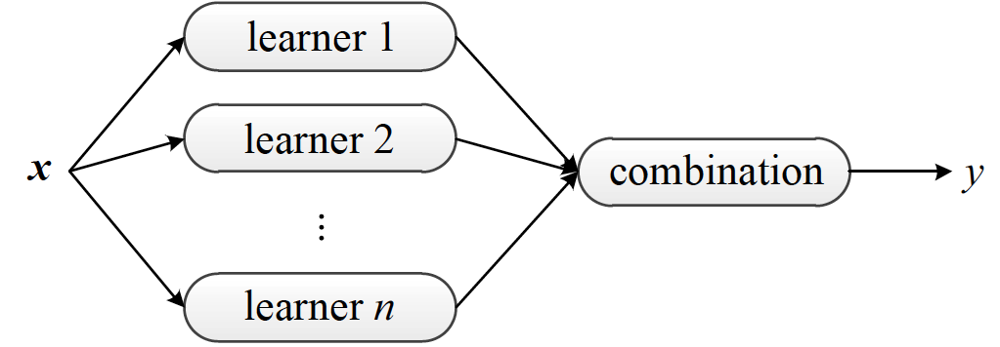
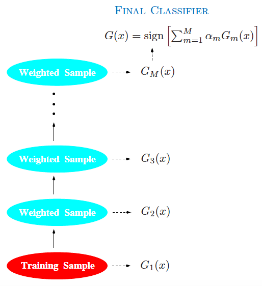
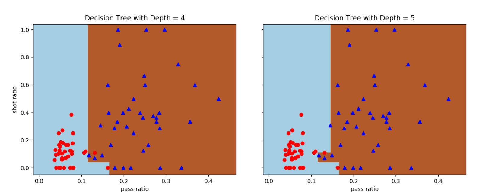
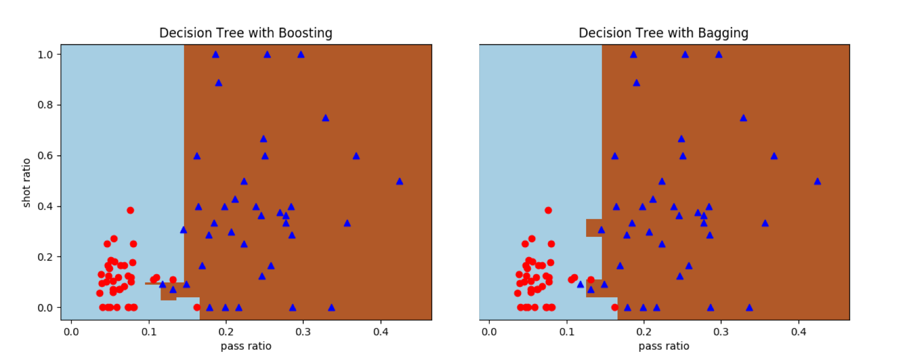
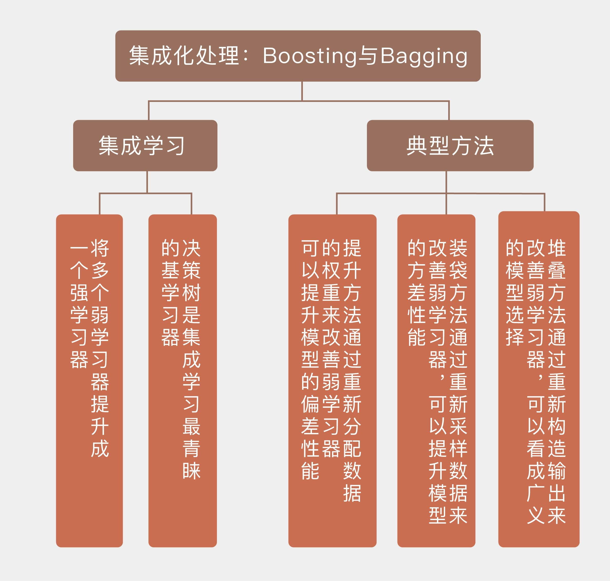

- 00 开篇词 打通修炼机器学习的任督二脉.md.html
- 01 频率视角下的机器学习.md.html
- 02 贝叶斯视角下的机器学习.md.html
- 03 学什么与怎么学.md.html
- 04 计算学习理论.md.html
- 05 模型的分类方式.md.html
- 06 模型的设计准则.md.html
- 07 模型的验证方法.md.html
- 08 模型的评估指标.md.html
- 09 实验设计.md.html
- 10 特征预处理.md.html
- 11 基础线性回归：一元与多元.md.html
- 12 正则化处理：收缩方法与边际化.md.html
- 13 线性降维：主成分的使用.md.html
- 14 非线性降维：流形学习.md.html
- 15 从回归到分类：联系函数与降维.md.html
- 16 建模非正态分布：广义线性模型.md.html
- 17 几何角度看分类：支持向量机.md.html
- 18 从全局到局部：核技巧.md.html
- 19 非参数化的局部模型：K近邻.md.html
- 20 基于距离的学习：聚类与度量学习.md.html
- 21 基函数扩展：属性的非线性化.md.html
- 22 自适应的基函数：神经网络.md.html
- 23 层次化的神经网络：深度学习.md.html
- 24 深度编解码：表示学习.md.html
- 25 基于特征的区域划分：树模型.md.html
- 26 集成化处理：Boosting与Bagging.md.html
- 27 万能模型：梯度提升与随机森林.md.html
- 28 最简单的概率图：朴素贝叶斯.md.html
- 29 有向图模型：贝叶斯网络.md.html
- 30 无向图模型：马尔可夫随机场.md.html
- 31 建模连续分布：高斯网络.md.html
- 32 从有限到无限：高斯过程.md.html
- 33 序列化建模：隐马尔可夫模型.md.html
- 34 连续序列化模型：线性动态系统.md.html
- 35 精确推断：变量消除及其拓展.md.html
- 36 确定近似推断：变分贝叶斯.md.html
- 37 随机近似推断：MCMC.md.html
- 38 完备数据下的参数学习：有向图与无向图.md.html
- 39 隐变量下的参数学习：EM方法与混合模型.md.html
- 40 结构学习：基于约束与基于评分.md.html
- 如何成为机器学习工程师？.md.html
- 总结课 机器学习的模型体系.md.html
- 总结课 贝叶斯学习的模型体系.md.html
- 结课 终有一天，你将为今天的付出骄傲.md.html
- 捐赠
26 集成化处理：Boosting与Bagging
伊壁鸠鲁（Epicurus）是古希腊一位伟大的哲学家，其哲学思想自成一派。在认识论上，伊壁鸠鲁最核心的观点就是“多重解释原则”（Prinicple of Multiple Explanantions），其内容是当多种理论都能符合观察到的现象时，就要将它们全部保留。这在某种程度上可以看成是机器学习中集成方法的哲学基础。

集成学习架构图（图片来自Ensemble Methods: Foundations and Algorithms，图1.9）
集成学习的常用架构如上图所示。在统计学习中，集成学习（ensemble learning）是将多个基学习器（base learners）进行集成，以得到比每个单独基学习器更优预测性能的方法。每个用于集成的基学习器都是弱学习器（weak learner），其性能可以只比随机猜测稍微好一点点。
集成学习的作用就是将这多个弱学习器提升成一个强学习器（strong learner），达到任意小的错误率。
在设计算法之前，集成学习先要解决的一个理论问题是集成方法到底有没有提升的效果。虽说三个臭皮匠赛过诸葛亮，但如果皮匠之间没法产生化学反应，别说诸葛亮了，连个蒋琬、费祎恐怕都凑不出来。
在计算学习的理论中，这个问题可以解释成弱可学习问题（weakly learnable）和强可学习问题（strongly learnable）的复杂性是否等价。幸运的是，这个问题的答案是“是”，而实现从弱到强的手段就是提升方法。
通俗来说，提升方法就是诸葛丞相手下这样的三个臭皮匠，啊不，裨将的组合：其中的第一位擅用步兵和骑兵，奈何对水战一窍不通，这样的将领用来对付曹操可以，对付孙权就有点儿吃亏了。为了补上第一位将军的短板，第二位裨将在选择时专门挑选了水战功力雄厚的。可惜人无完人，这位水军高手也有严重的偏科，骑在马上还可以，指挥步兵就是去送人头。这两位参谋放在一起，指挥骑兵一点儿问题都没有，但另外两个军种就差点儿意思。
为了查缺补漏，诸葛丞相在第三位裨将的选择上颇费了一番心思，找到了一位步战和水战兼通的将军。这样一来，这三位裨将组成的联席会议就能游刃有余地指挥各种战斗：无论在哪种战法上，专业的将领都能够占到了总体中的多数。虽然每一位将领单独拎出来都有严重的缺陷，可三个组合在一起就能让战斗力大大地提升。

提升方法示意图（图片来自Elements of Statistical Learning，图10.1）
上面的解释意在说明，提升方法（boosting）通过改变训练数据的分布来训练不同的弱学习器，再将它们组合成强学习器。虽然不受具体训练方法的限制，但大多数提升算法都会迭代生成与数据分布相关的弱分类器，并将它们以加权组合的方式添加到最终的强分类器中。每当一个新的弱学习器加入后，数据的权重都会被重新分配（reweighting），被错误分类的样本占据更大的权重，被正确分类样本的权重则被相应地削减，这保证了未来的弱学习器会更多地以前车之覆作为后车之鉴。
既然训练数据都是一样的，那么如何在每个轮次中选择不同的权重分配呢？
在自适应提升（adaptive boosting, AdaBoost）这个最成功的提升算法中，权重分配的策略是这样的：以二分类任务为例，首先给每个样本赋予相同的权重\(w_i = 1 / N\)，再用它们来训练弱分类器\(f_m(x)\)并计算训练误差\(\\epsilon_m\)，根据训练误差可以计算出权重调整的系数\(\\alpha_m = 0.5 \\log \[(1 - \\epsilon_m) / \\epsilon_m\]\)，并对每个样本的权重\(w_i\)做出调整
\[ w_i \\leftarrow w_i \\cdot \\exp \[\\alpha_m I(x_i)\]\]
对分类错误的样本\(I(x_i) = 1\)，分类正确的样本\(I(x_i) = -1\)，这样做的作用就是放大误分类样本的权重。新计算出的权重经过归一化处理后，就可以用来继续训练下一个弱分类器，直到集成出强分类器为止。强分类器的数学表达式为
\[ F(x) = {\\rm sign} \[\\sum\\limits_{m = 1}^M \\alpha_m f_m(x)\] \]
如果将二分类任务进行推广，那么上面表达式中的符号函数sign\((\\cdot)\)就可以去掉，得到的就是一个进行了基函数扩展的线性回归模型。
和决策树类似，提升方法本质上是个广义可加模型，它的每个组成部分都是一个单独的弱学习器。随着弱学习器不断被添加到强学习器中，新的扩展基函数也被不断添加到广义可加模型中，但每一个添加的扩展基函数都预先经过优化，优化的过程是逐步来完成的。
在此基础上可以进一步推导得出，当使用指数函数\(\\exp \[y_i \\cdot f(x_i)\]\)作为损失函数时，作为基扩展的AdaBoost模型计算的就是样本属于某个类别的对数几率。换言之，AdaBoost就是加强版的逻辑回归。
提升方法的重点在于取新模型之长补旧模型之短来降低偏差，尽可能获得无偏的估计，模型之间是相互依赖的。如果去除对依赖性的限制，使用相互独立的模型来实现集成，典型的方法就是装袋法。
装袋法（bagging）是自主聚合（bootstrap aggregating）的简称，是模型均衡的一种手段。我们都知道，如果对\(N\)个相互独立且方差相同的高斯分布取均值，新分布的方差就会变成原始方差的\(1 / N\)。
将同样的道理推广到统计学习上，从训练数据集中利用重采样（resampling）抽取出若干个子集，利用每个子集分别建立预测模型，再对这多个预测值求平均，就能够降低统计学习方法的方差。需要注意的是，装袋法并没有降低偏差的效果，也就没法提升预测的准确性，因此在选择基学习器时，应当以偏差较小的优先。
秉承平均主义观点的装袋法有个特点，就是在不稳定的弱学习器上效果尤为明显。假设用于平均的学习器是\(h(\\cdot)\)，那么装袋法的结果就是\(h(\\cdot)\)在自助采样法采出来的数据分布上的期望值。
利用方差不等式\((E\[X\]) ^ 2 \\le E\[X ^ 2\]\)可以计算出，经过装袋后模型的方差不会大于每个单独训练出来模型的方差在自助采样分布上的数学期望，也就是先求期望再求方差优于先求方差再求期望。
这样的性质说明装袋法对方差的降低实际上是一种平滑效应：模型在不同的数据子集上波动越大，装袋法的效果就越好。如果模型本身受数据的影响不大的话，那装袋也不会起到太好的提升效果。
这样的道理在生活中也有所体现：一个团队里总会有一些哪里需要哪里搬的“万金油”型成员，在必要的时候顶到缺人的岗位上，可一旦全是万金油成员的话，这对团队的帮助就非常有限了，甚至还会起到反作用。
装袋法之所以能够降低方差，最主要的原因在于它可以平滑高次项的方差。对于具有\(x ^ n, n \\ge 3\)形式的高阶指数项来说，输入和输出之间存在着雪崩的效应，输入端一点微小的扰动都可能导致输出的大幅波动。如果输入输出关系的拟合结果中存在这样的高阶项，它就必然是不稳定的。
装袋法的好处在于能够降低高阶项的方差，同时又不会影响到线性项的输出。所以如果弱学习器是多项式这类高阶模型，或是决策树这类容易受样本扰动影响的模型，用装袋法来集成都是不错的选择。
从贝叶斯的角度看，装袋法的输出是近似于后验最优的预测，但这需要弱学习器满足次序正确的条件。还是以分类问题为例，如果给定的样本\(\\bf x\)属于类别\(y\)的概率最大，那么次序正确（order-correct）的分类器\(h(\\cdot)\)就应该以最大的概率把\(\\bf x\)划分到\(y\)中。
可以证明，这种情况下装袋法能够达到的最高精度就是按照后验概率对样本进行划分，此时模型的错误率就是贝叶斯错误率（Bayes error rate）。
决策树是集成学习最青睐的基学习器，无论是提升法还是装袋法，其代表性的算法都是在决策树的基础上发展出来的。
接下来，我将原始决策树算法和集成化的决策树算法应用在线性不可分的曼城-西布朗数据集上，观察其分类的结果。
可以看到，在使用单棵决策树的DecisionTreeClassifier类时，深度为4时还会存在误分类点，可再增加一层结点就可以实现完全正确的分类。但需要说明的是，由于决策树的初始生成方式是随机的，即使深度相同的树也不能保证每次都产生相同的边界。

单棵决策树对曼城-西布朗数据集的分类结果
采用决策树的集成可以得到不同的分类边界。在Scikit-learn中，两种继承方法都在ensemble模块中，类的名称分别是AdaBoostClassifier和BaggingClassifier。
在AdaBoost和装袋法中，每个基学习器都被设置为深度为3的决策树。从结果中可以看出，提升方法可以得到完全正确的结果，但装袋方法的分类还会存在误差。其原因在于深度为3的决策树属于弱学习器，本身存在着不小的偏差。提升方法可以同时控制偏差和方差，将每个数据点都正确分类；但装袋方法只能降低方差而没法改善偏差，出现误分类点也就不奇怪了。

集成化决策树对曼城-西布朗数据集的分类结果
除了提升法和装袋法之外，另一种知名度较低的集成方法是堆叠法。堆叠法（stacking）也叫堆叠泛化（stacked generalization），是层次化的集成方法，其思想和神经网络类似，只不过神经网络堆叠的对象是神经元和隐藏层，而集成方法堆叠的是同构或者异构的基学习器。
堆叠法先要用自助采样生成不同的数据子集，用数据子集训练第一层中不同的基学习器。第一层基学习器的输出再被送到第二层的元分类器（meta classifier）中作为输入，用来训练元分类器的参数。
堆叠法的思想和前两种方法有所不同。无论是提升法还是装袋法，其重点都落在单个模型的生成方式上，也就是如何训练出合适的基学习器，基学习器的形式一般是统一的。
而堆叠法的重点在于如何将不同的基学习器的结果组合起来，研究的对象是让所有基学习器共同发挥出最大效果的组合策略。某种意义上说，堆叠法的训练数据不是原始的训练数据集，而是不同基学习器在训练数据集上的结果，起到的是模型平均（model averaging）的作用，提升法和装袋法都可以看成它的特例。正因如此，堆叠法除了被视为集成方法外，还可以看成是模型选择的一个手段。
集成方法超出了简单的模型范畴，是元学习（meta learning）的方法。元学习还没有业界公认的标准解释，但通常被理解为“关于学习的学习”。在集成方法这个实例中，元学习体现在通过改变数据特征、数据集和算法构造方式，通过多算法的融合来实现更加灵活的学习。
今天我和你分享了集成学习的基本原理，以及典型的集成学习方法，包含以下四个要点：
集成学习可以将多个弱学习器组合成强学习器，是模型的融合方法；
提升方法通过重新分配数据的权重来改善弱学习器，可以提升模型的偏差性能；
装袋方法通过重新采样数据来改善弱学习器，可以提升模型的方差性能；
堆叠方法通过重新构造输出来改善弱学习器，可以看成广义的模型选择。
不同的集成方法也可以集成起来。如果将提升方法的输出作为装袋方法的基学习器，得到的是MultiBoosting方法；而如果将装袋方法的输出作为提升方法的基学习器，得到的就是Iterativ Bagging方法。
对这两种关于集成的集成，你可以查阅资料，深入了解它们的原理与优缺点，并在这里留下你的见解。

© 2019 - 2023 Liangliang Lee. Powered by gin and hexo-theme-book.